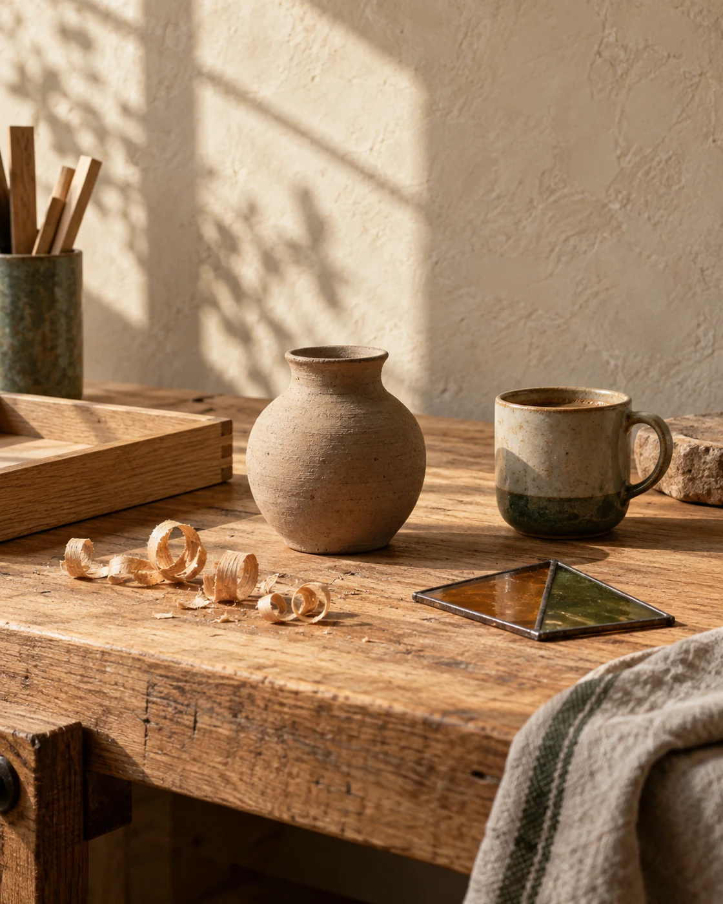

01
找到真實職人
店家、師傅、創作者、農夫、技師。你有專長，也願意打開工作日常。

有些成長，
從「我也想試試看」開始。
小小的體驗，
大大的真實世界。
一杯咖啡、一片玻璃、一塊木頭。
讓日常裡的專業，成為孩子認識世界的起點。
從聞香到風味描述，
練習感受一杯咖啡的細節。
讓光穿過自己的配色，
完成一件生活裡的玻璃作品。
常駐活動可報名；其餘方向開放興趣登記，合作與場次確認後另行公告。
試試其他關鍵字，或切換活動分類。
先找到值得認識的人，再一起把專業
轉化為孩子能安全參與的小小任務。
店家、師傅、創作者、農夫、技師。你有專長，也願意打開工作日常。
一起挑一個孩子能觀察、動手、完成的小任務，留下一份真實成就感。
依內容確認場地、工具、適齡範圍、家長陪同與必要的安全安排。
合作確認後，清楚公布日期、費用、名額與方式，從小規模開始。
孩子需要的不只是被教，小小職人體驗的起點
而是有機會看見，
大人怎麼把事情做好。
課本可以告訴孩子木頭、咖啡、汽車、陶土是什麼。真實的工作現場，則讓他知道：做好一件事，需要判斷、耐心、手感、經驗與責任。
我們想留下的，是一個具體的記憶：
「我曾經跟一個很會做這件事的人，一起做過一次。」
分享你的專長，或告訴我們孩子的好奇。
不必立刻決定，先從一次對話開始。
讓每一次參與，都更安心、清楚。
丁威咖啡的咖啡杯測與玻璃拼貼藝術課為常駐體驗，可進入家長報名頁建立資料，日期於報名後協調。其餘體驗方向仍在媒合，開放興趣登記；正式場次將待職人、場地與安全規劃確認後公告。報名頁會清楚標示資料是否已送至主辦方。
不用。核心條件是真實專長與願意分享。如何轉成孩子能參與的流程，可以一起設計。
目前第一階段以認識與媒合為主，不收取加入計畫的費用。未來若有正式合作、材料、場地或活動成本，會在確認前清楚討論。
正式活動前會依內容評估適齡操作、家長陪同、工具替代方案、場地規範與必要的風險管理。未完成安全確認的內容不會直接對外開放。